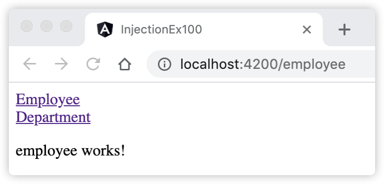

11 学习Angular的服务及依赖注入¶
本章开始学习Angular的服务及依赖注入知识。服务是一个广义的概念，它包括应用所需的任何值、函数或业务功能。狭义的服务是一个明确定义了用途的类，该类关注一些具体的业务逻辑。我们先介绍为什么需要服务。
11.1 为什么需要服务¶
在Angular中最常用的就是组件。组件通常会通过一些指令去接收一些数据，并在组件内部进行逻辑处理。但事实上这样做并不合理，理想情况下，组件的工作只管用户体验，不应该负责如何去直接或间接地获取数据，也不应该关心自己展示的数据是真实的还是模拟的假数据。组件仅仅只需要展示数据就可以了，获取和处理数据的工作应该让服务来完成。
Angular把组件和服务区分开，以提高模块性和复用性。通过把组件中和视图有关的功能与其他类型的处理（数据或逻辑）分离开，可以让组件类更加精简、高效。 组件应该把诸如从服务器获取数据、验证用户输入或直接往控制台中写日志等工作委托给各种服务。通过把各种处理任务定义到可注入的服务类中，可以让它被任何组件使用。
需要服务还有一个重要的原因就是依赖注入，Angular通过依赖注入更容易地将应用逻辑分解为服务，并让这些服务可用于各个组件中。在技术上，服务只是一个类，仅包含处理业务的逻辑代码，它应该与视图渲染完全分开。在业务上，服务应遵循单一责任原则，仅实现单一的业务功能。服务的目标是把业务逻辑集中在一起，根据用途打包好，供应用中其他的组件、指令或别的服务等调用。使用服务，用户不需要反复的复制代码，只需通过依赖注入的方式轻松地调用它们即可。
11.2 什么是依赖注入¶
在软件工程中，依赖注入（Dependency Injection）是一种软件设计模式，它可以实现控制的反转，以解决依赖关系。 依赖注入是一种编码模式，通俗的理解是：一个类从外部源接收它需要的对象实例（称为依赖项），而不是自己创建这些依赖项。
依赖注入被融入Angular框架中，用于在任何地方给新建的组件提供服务或所需的其它东西。组件是服务的消费者，可以把一个服务注入到组件中，让组件类直接访问该服务类。
理解Angular的依赖注入，需要先了解下面这几个概念：
注入器（Injector）：注入器是Angular自己的类，不需要用户创建，它负责提供依赖注入服务。Angular中注入器是个树状结构，按照层级划分，有根注入器，有模块注入器（ModuleInjector）、组件注入器及元素注入器（ElementInjector）。Angular会在应用启动过程中创建注入器。注入器是一个容器，它会创建依赖，并管理这些依赖，提供这些依赖在应用程序中的其他地方使用；
提供商（Provider）：提供商是一个类，用来告诉注入器应该如何获取或创建依赖。Angular中对于要用到的任何服务，要求必须至少注册一个提供商。
依赖（Dependency）：依赖描述的是一个类从外部源接收它需要的对象实例，这些对象实例作为依赖已经在注入器中创建好了，该类仅需要注入它即可使用，不需要自己创建这些依赖。依赖可以是服务类、函数、对象、接口或值等。
Angular的依赖注入就是围绕上面的内容展开，简单的用一句话概括它们之间的关系：注入器通过提供商创建依赖。
在创建依赖的过程中，可以有选择的对依赖注入进行配置，如选择注入器，配置提供商等。当完成了Angular依赖注入的配置后，注入器通过提供商创建依赖，最后我们就可以在Angular中使用依赖注入了。
11.3 创建可注入的服务类¶
Angular中创建服务类与创建模块、组件、和指令类似。默认情况下，使用Angular CLI的 ng generate service 命令创建服务，它会生成一个@Injectable()装饰器声明的服务类，如创建一个日志（log）服务命令：
ng g service log # ng generate service log 的缩写，log是服务类的文件名
上述命令会在根目录下生成服务类文件：log.service.ts，文件初始内容如下：
import { Injectable } from '@angular/core'; @Injectable({ providedIn: 'root' }) export class LogService { constructor() { } }
Angular的服务类用@Injectable()装饰器声明。@Injectable()是一个标记性装饰器，表示它声明的类可由注入器（Injector）创建并可以作为依赖项注入。它仅包含一个providedIn属性的元数据。providedIn属性用于指定注入器，可接收3种字符串值：’root’、’platform’和’any’，它们分别代表着3种不同级别的注入器。
11.4 如何选择注入器¶
注入器（Injector）是Angular自己的类，不需要用户创建，它负责提供依赖注入服务。但是Angular提供的注入器有多种，Angular启动过程中会自动为每个模块创建一个注入器，注入器是一个树结构。
Angular为根模块（AppModule）创建的是根（root）注入器；
根注入器会提供依赖的一个单例，可以把这个单例对象注入到多个组件中；
模块和组件级别的注入器可以为它们拥有的组件及其子组件提供同一个依赖的不同实例；
可以为同一个依赖使用不同的提供商来配置这些注入器，这些提供商可以为同一个依赖提供不同的实现。
注入器是可继承的，这意味着如果指定的注入器无法解析某个依赖，它就会请求父注入器来解析它。组件可以从它自己的注入器来获取服务、从其祖先组件的注入器中获取、从其父模块（NgModule类）级别的注入器中获取，或从根（root）注入器中获取。
服务有作用域，表示该服务在应用中的可见性。不同级别的注入器创建的依赖服务对应着应用中的不同的可见性。@Injectable()装饰器中提供了选择注入器的一种方式，通过配置元数据providedIn属性的值，可以选择不同级别的注入器。providedIn属性可接收3种字符串值：’root’、’platform’和’any’，它们分别代表着3种不同级别的注入器：
字符串’root’，表示选择的是根注入器，根注入器在整个应用中仅创建服务的一个单一的共享实例，可以把这个单例对象注入到任何想要它的类中；
字符串’platform’，表示选择的是元素注入器（ElementInjector），元素注入器使服务可以在整个应用程序和Angular自定义元素（Elements）间共享。关于Angular自定义元素，简单的理解就是将Angular组件的所有功能打包为原生的HTML，可以供其他非Angular框架使用。因此，platform作用域大于root作用域；
- 字符串’any’，表示选择的是模块注入器，这意味着同一服务可能有多个实例。它与root的区别是：
对于非延迟加载的模块，它们共享一个由根注入器提供的实例服务；
对于延迟加载的模块，每个模块分别创建一个自己的实例，供模块内单独使用。
选择了注入器后，依赖注入还需要一个提供商。因为Angular中对于要用到的任何服务，要求必须至少注册一个提供商。提供商是一个类，用来告诉注入器应该如何获取或创建依赖，对于服务类来说，提供商就是它自己。因此，上面使用命令创建的LogService服务已经是一个依赖服务了，可以在其他组件中注入并使用它。
11.5 如何配置提供商¶
当使用提供商配置注入器时，注入器就会把提供商和一个token关联起来，维护一个内部关系（token-provider）映射表，当请求一个依赖项时就会引用它。token就是这个映射表的键（key）。
Angular依赖注入系统中可以在缓存中根据名字查找依赖，也可以通过配置过的提供商来创建依赖。我们必须使用提供商来配置注入器，否则注入器就无法知道如何创建此依赖。注入器创建服务实例的最简单方法，就是用这个服务类本身来创建它。但是在现实中，依赖除了服务类外，还可以是函数、对象、接口或值等。因此Angular提供了很多类型的提供商，不同的提供商可以针对特定的依赖项提供定制化的创建服务。如针对服务类来说，也可以通过配置提供商来定制化的创建服务实例。
11.5.1 有哪些类型的提供商¶
提供商是一个实现了Provider接口的对象，它告诉注入器应该如何获取或创建依赖服务的实例。Provider类型定义如下：
type Provider = TypeProvider | ValueProvider | ClassProvider | ConstructorProvider | ExistingProvider | FactoryProvider | any[];
从上面的定义可以看出，Angular中Provider支持至少上述6种类型的提供商，下面来分别介绍它们。
11.5.2 配置提供商¶
Angular中提供了3个地方可以配置提供商，以便在应用的不同层级使用提供商来配置注入器：
在服务本身的@Injectable()装饰器中。
在模块类的@NgModule()装饰器中。
在组件类的@Component()装饰器中。
其中在服务本身的@Injectable()装饰器中仅有一个元数据providedIn属性，可以用它来选择不同的注入器，缺省了配置提供商的属性。其实对于服务来说，提供商就是它自己，因此，Angular默认通过调用该服务类的new运算符来创建实例。
在@NgModule()装饰器和@Component()装饰器的元数据中都提供了providers属性，可以通过该属性来配置提供商：
当使用@NgModule()装饰器中的providers属性配置提供商时，该服务的实例对该NgModule类中的所有组件是可见的，该NgModule类中的所有组件可以注入它；
当使用@Component()装饰器中的providers属性配置提供商时，该服务只对声明它的组件及其子组件可见，它会为该组件的每一个新实例提供该服务的一个新实例。
11.5.2.1 TypeProvider提供商¶
TypeProvider称为Type提供商，Type提供商用于告诉注入器（Injector)，使用指定的类来创建服务实例。本质上是通过调用类的new运算符来创建实例。这也是我们用的最多的一种方式。如下代码所示：
providers: [ LogService ] // LogService是一个@Injectable()装饰器声明的类
在上面的代码中，配置的依赖项是一个LogService类的实例，而该类的类型（LogService）是该依赖的token值。
11.5.2.2 ValueProvider提供商¶
ValueProvider称为值提供商，ValueProvider接口定义如下：
interface ValueProvider extends ValueSansProvider { provide: any multi?: boolean // 可选的参数 useValue: any }
其中的provide属性接受3种类型的token值：类、InjectionToken对象实例及其他任何对象实例。
当provide属性的token值为类和对象实例时，参考下面的代码片段：
const JAVA_BOOK = new Book('Learning Java', 'Java'); providers: [ {provide: String, useValue: 'Hello'}, // 注入的依赖为字符串值，String类作为该依赖的token值 {provide: 'name', useValue: 'Hello'}, // 注入的依赖为字符串值，字符串实例'name'作为该依赖的token值 {provide: Book, useValue: JAVA_BOOK} // 注入的依赖为Book对象实例，Book作为该依赖的token值 ]
InjectionToken类用来创建InjectionToken的对象实例，该类定义如下：
class InjectionToken<T> { //接收一个泛型（T）对象 constructor( _desc: string, // 一个描述（_desc）参数 options?: { providedIn?: Type<any> | "root" | "platform" | "any"; factory: () => T; } ) protected _desc: string toString(): string }
InjectionToken类接收一个泛型（T）对象和一个描述（_desc）参数。 当provide属性为InjectionToken对象实例时，useValue属性接收的类型取决于InjectionToken类中的泛型类型：
const HELLO_MESSAGE = new InjectionToken<string>('Hello!'); // 创建一个字符串类型的可注入对象 providers: [{ provide: HELLO_MESSAGE, useValue: 'Hello World!' // 接收一个字符串，与InjectionToken类的泛型string对应 }]
Angular中的接口其实是TypeScript语言的功能，而JavaScript语言没有接口，所以，当TypeScript转译成JavaScript时，接口也就消失了。因此，InjectionToken类常用于封装接口类型的对象实例。如下代码：
interface Config { // Config是一个接口 apiEndPoint: string; timeout: number; } const configValue: Config = { // 定义一个接口类型实例 apiEndPoint: 'def.com', timeout: 5000 }; // 定义一个InjectionToken类型实例，实际是封装Config接口对象 const configToken = new InjectionToken<Config>('demo token'); providers: [{ provide: configToken, useValue: configValue // 使用configToken作为依赖的token }]
11.5.2.3 ClassProvider提供商¶
ClassProvider称为类提供商，ClassProvider与ValueProvider类似，它的provide属性接受值与ValueProvider的相同，不同的是useClass属性接受一个类，或者该类的子类类型：
providers: [{ provide: LogService, useClass: LogService }]
在上面的代码中，依赖项的值是一个LogService类的实例，而该类的类型（LogService）是该依赖的token值。
11.5.2.4 ConstructorProvider提供商¶
ConstructorProvider提供商可以理解为等同TypeProvider提供商，它仅有provide属性，且接受一个类：
providers: [{ provide: LogService }]
在上面的代码中，依赖项的值是一个LogService类的实例，而该类的类型（LogService）是该依赖的token值。
11.5.2.5 ExistingProvider提供商¶
ExistingProvider用于创建别名提供商。假设老的组件依赖于 OldLogger 类。OldLogger 和 NewLogger 的接口相同，但是由于某种原因，我们没法修改老的组件来使用 NewLogger，这时可以使用 useExisting 为 OldLogger 指定一个别名 NewLogger：
[ NewLogger, { provide: OldLogger, useExisting: NewLogger }]
上述配置中，使用NewLogger作为OldLogger的别名。
11.5.2.6 FactoryProvider提供商¶
有时候可能需要动态创建依赖值，创建时需要的信息要等运行期间才能拿到。这时可以使用FactoryProvider提供商。 FactoryProvider使用 useFactory 选项来配置该注入器。useFactory属性接收一个函数：
providers: [{ provide: LogService, useFactory: () => new LogService() }]
在上面的代码中，依赖项的值是useFactory属性中函数返回的对象实例，类LogService是该依赖的token值。
11.6 在类中注入服务¶
当完成了Angular依赖注入的配置后，注入器通过提供商创建依赖，创建依赖的过程可以这么理解：Angular注入器将会查找具体token值对应的提供商，然后使用该提供商创建对象实例，作为依赖项存储待注入器容器中。当完成了依赖的创建过程后，我们就可以通过注入依赖的方式，在Angular中使用该依赖服务实例的方法和属性了。
上面我们提及到，选择不同的注入器，或在不同的位置配置提供商，依赖服务在应用中的可见性是不同的。比如，providedIn配置为root时，服务是单例的。也就是说，在指定的注入器中最多只有某个服务的一个实例。
Angular依赖注入具有分层注入体系，应用有且只有一个根注入器。这意味着下级注入器也可以创建它们自己的服务实例。 Angular会有规律的创建下级注入器。每当 Angular创建一个在@Component() 中指定了providers的组件实例时，它也会为该实例创建一个新的子注入器。类似的，当在运行期间加载一个新的NgModule类时，Angular也可以为它创建一个拥有自己的提供商的注入器。
子模块和组件注入器彼此独立，并且会为所提供的服务分别创建自己的实例。当Angular销毁NgModule或组件实例时，也会销毁这些注入器以及注入器中的那些服务实例。
子组件的注入器是其父组件注入器的子节点，它会继承所有的祖先注入器，其终点则是应用的根注入器。
Angular提供了多种灵活的方式注入依赖，下面对其进行详细的讲解。
11.6.1 注入依赖类实例¶
可以通过类的构造函数注入依赖项，即在构造函数中指定参数的类型为注入的依赖类。下面的代码是某个组件类的构造函数，它要求注入LogService：
constructor(private logService: LogService)
Angular注入器将会查找token值为LogService的提供商，然后使用该提供商创建的对象实例，作为依赖项，赋值给logService变量。当完成了依赖注入服务后，就可以在类中使用该服务实例的方法和属性了。
11.6.2 注入可选的依赖类实例¶
在实际应用中，有时候某些依赖服务是可有可无的，换句话说，可能存在需要的依赖找不到。这时，可以通过@Optional()装饰器来显示的声明服务，告知Angular这是一个可选的依赖服务，同时，需要我们在代码中通过条件来判断服务是否存在。如下代码所示：
constructor(@Optional() private logService: LogService) { if (this.logService) { // 判断是否存在 // 具体业务逻辑 } }
11.6.3 使用@Inject()装饰器指定注入的实例¶
上面介绍注入依赖类实例时，默认注入的类型是该依赖的类型，即可以理解为：根据token值来注入依赖类服务。当我们遇到注入的依赖是一个值对象，数组或者接口时，需要使用@Inject()装饰器来显示的指明依赖的token值。如：之前我们使用InjectionToken类封装了一个接口类型的依赖，然后期望在组件或者服务类中注入该接口类型的依赖实例时，需要使用@Inject()装饰器来显示的指明依赖的token值。如下代码：
// 注意这里需要使用@Inject()装饰器，configToken是该接口依赖的token值 constructor(@Inject(configToken) private config: Config) { // Config是注入依赖的类型 console.log('new instance is created'); }
又比如，我们在服务中配置一个值提供商，然后在类中注入该值提供商创建的值：
providers: [{ provide: 'name', useValue: '变量name的值' }] constructor(@Inject('name') private config: String) { // String是注入依赖的类型 this.title = '值Provide: ' + config; }
11.6.4 注入Injector类对象实例¶
Injector类是Angular的注入器对应的Class类，既然注入器创建和维护着依赖，那么我们可以直接通过注入Injector类实例，然后通过它的方法获取依赖。比如，上面介绍的注入值类型，可以用下面的方式实现：
providers: [{ provide: 'name', useValue: '变量name的值' }] constructor(private injector: Injector) { // 注入Injector类对象实例 this.title = '值Provide: ' + injector.get('name'); }
上述代码中，我们通过注入Injector类对象实例，然后调用它的get()方法来获取对应的依赖。
下面，我们通过一个示例演示配置和使用依赖注入。
11.6.5 [示例 injection-ex100] 演示Angular配置和使用依赖注入¶
用Angular CLI构建应用程序，具体命令如下：
ng new injection-ex100 --minimal --interactive=false
启动服务，具体命令如下：
ng serve
查看应用程序结果。打开Web浏览器并浏览到 “http://localhost:4200”，应该看到文本 “Welcome to injection-ex100!”。
创建两个延迟加载模块。具体命令如下：
ng g m features/employee --route employee --module app.module ng g m features/department --route department --module app.module
创建配置接口和依赖服务类。具体命令如下：
ng g i shared/config ng g service shared/config # 注意service没有缩写
编辑配置接口类。编辑文件src/app/shared/config.ts，并将其更改为以下内容：
import { InjectionToken } from '@angular/core'; export interface Config { apiEndPoint: string; timeout: number; } export const configToken = new InjectionToken<Config>('demo token');
编辑依赖服务类。编辑文件src/app/shared/config.service.ts，并将其更改为以下内容：
import { Injectable, InjectionToken, Inject } from '@angular/core'; import { Config, configToken } from './config'; @Injectable({ providedIn: 'root' }) export class ConfigService { // 注入Config接口 constructor(@Inject(configToken) private config: Config) { console.log('new instance is created'); } getValue() { return this.config; } }
编辑employee组件。编辑文件src/app/features/employee/employee.component.ts，并将其更改为以下内容：
import { Component, OnInit } from '@angular/core'; import { ConfigService } from 'src/app/shared/config.service'; @Component({ selector: 'app-employee', template: ` <p> employee works! </p> `, styles: [] }) export class EmployeeComponent implements OnInit { constructor(private configService: ConfigService) { } ngOnInit(): void { console.log(this.configService.getValue()); } }
编辑employee模块。编辑文件src/app/features/employee/employee.module.ts，并将其更改为以下内容：
import { NgModule } from '@angular/core'; import { CommonModule } from '@angular/common'; import { DepartmentRoutingModule } from './department-routing.module'; import { DepartmentComponent } from './department.component'; import { Config, configToken } from 'src/app/shared/config'; export const configValue: Config = { // 自定义配置 apiEndPoint: 'xyz.com', timeout: 4000 }; @NgModule({ declarations: [DepartmentComponent], imports: [ CommonModule, DepartmentRoutingModule ], providers: [{ provide: configToken, useValue: configValue // 注册ValueProvider提供商 }] }) export class DepartmentModule { }
编辑department组件。编辑文件src/app/features/department/department.component.ts，并将其更改为以下内容：
import { Component, OnInit } from '@angular/core'; import { ConfigService } from 'src/app/shared/config.service'; @Component({ selector: 'app-department', template: ` <p> department works! </p> `, styles: [] }) export class DepartmentComponent implements OnInit { constructor(private configService: ConfigService) { } ngOnInit(): void { console.log(this.configService.getValue()); } }
编辑department模块。编辑文件src/app/features/department/department.module.ts，并将其更改为以下内容：
import { NgModule } from '@angular/core'; import { CommonModule } from '@angular/common'; import { DepartmentRoutingModule } from './department-routing.module'; import { DepartmentComponent } from './department.component'; import { Config, configToken } from 'src/app/shared/config'; export const configValue: Config = { // 自定义配置 apiEndPoint: 'xyz.com', timeout: 4000 }; @NgModule({ declarations: [DepartmentComponent], imports: [ CommonModule, DepartmentRoutingModule ], providers: [{ provide: configToken, useValue: configValue // 注册ValueProvider提供商 }] }) export class DepartmentModule { }
编辑组件。编辑文件src/app/app.component.ts，并将其更改为以下内容：
import { Component } from '@angular/core'; @Component({ selector: 'app-root', template: ` <a routerLink="employee">Employee</a> <br> <a routerLink="department">Department</a> <router-outlet></router-outlet> `, styles: [] }) export class AppComponent { title = 'injection-ex100'; }
观察应用程序页面，页面显示效果如图11-1所示。
图11-1 演示Angular注册服务的作用域范围
{kind=link}
在上面的示例injection-ex100中，完成了以下内容：
创建了两个延迟加载模块，Angular CLI命令自动配置好了延迟路由；
创建和注册了可注入的服务ConfigService类，使用默认配置提供商，注册给根（root）注入器。同时，在其constructor构造函数中，通过@Inject()装饰器注入一个Config接口对象。@Inject()装饰器负责指定依赖对象，这里是configToken对象，configToken对象是通过InjectionToken类创建的一个可注入的接口对象。简单的说，ConfigService类依赖Config接口对象；
分别在两个延迟模块中的组件中注入ConfigService服务类，并在ngOnInit()方法中调用该服务的方法；
分别在两个延迟模块类中初始化configToken对象，然后配置ValueProvider提供商，分别接收不同的配置参数。
单击页面链接，发现无任何反应，进入开发者模式，查看控制台显示打印日志信息。这时，控制台抛出错误信息，产生空指针错误，详细情况是组件中注入的ConfigService依赖类遇到了空指针错误。
产生上述错误信息的原因是，我们在ConfigService类默认使用了：providedIn: ‘root’配置，它表示将ConfigService类注入到根注入器中，并在应用的启动阶段就实例化好了一个实例对象。然而ConfigService类依赖的配置参数是分别在延迟加载模块中注册的，当我们准备点击页面上的链接时，两个延迟加载模块这时并没有加载，因此ConfigService依赖的配置这时不存在，故ConfigService类依赖类遇到了空指针错误，准确的说，它依赖的configToken对象为空。
解决这个问题的思路是，可以在appModule中初始化configToken对象，然后将其注册到根注入器中，这时ConfigService类在启动阶段就能读取配置参数了。编辑文件src/app/app.module.ts，并将其更改为以下内容：
import { BrowserModule } from '@angular/platform-browser'; import { NgModule } from '@angular/core'; import { AppRoutingModule } from './app-routing.module'; import { AppComponent } from './app.component'; import { Config, configToken } from './shared/config'; export const configValue: Config = { // 自定义配置 apiEndPoint: 'def.com', timeout: 5000 }; @NgModule({ declarations: [ AppComponent ], imports: [ BrowserModule, AppRoutingModule ], providers: [{ provide: configToken, useValue: configValue // 注册ValueProvider提供商 }], bootstrap: [AppComponent] }) export class AppModule { }
配置完成后，再次点击链接，控制台均打印AppModule模块中配置的内容，说明两个延迟模块加载同一个配置信息。但是我们是期望在不同的模块中加载不同的配置信息。这时，我们可以通过配置：providedIn: ‘any’来达成此目的。
编辑依赖服务类。编辑文件src/app/shared/config.service.ts，并将其更改为以下内容：
import { Injectable, InjectionToken, Inject } from '@angular/core'; import { Config, configToken } from './config'; @Injectable({ providedIn: 'any' // 原先值是root }) export class ConfigService { // 注入Config接口 constructor(@Inject(configToken) private config: Config) { console.log('new instance is created'); } getValue() { return this.config; } }
配置完成后，再次点击链接，控制台分别打印各自模块中配置的内容，说明两个延迟模块加载的是各自不同的配置信息。
通过上述示例，可以看出，合理的使用Provider提供商，可以使我们的应用模块化和参数化。
11.7 创建一个数据服务¶
Injector类是Angular的注入器对应的Class类，上面我们介绍了如何通过注入Injector类获取依赖，同样的，我们也可以直接使用Injector类创建依赖。
constructor() { const injector = Injector.create({ providers: [{ provide: 'name', useValue: '变量name的值' }] }); this.title = '值Provide: ' + injector.get('name'); }
上面代码中，通过Injector类的create()方法，创建了一个Injector类实例，该实例中维护着一个token为’name’的值提供商，该提供商负责创建依赖（一个值对象）。通过调用Injector类实例的get()方法获得对应token提供商创建的依赖值。
11.8 小结¶
本章主要介绍了Angular有关服务方面的知识，从依赖注入的概念一直到注入器（Injector）本身，掌握了如何创建依赖服务以及如何配置各种提供商。 我们也知道了服务有单例和多例的区别。当然了，有关服务的知识还有很多，比如可以使用服务作为组件之间的通信桥梁，比如可以使用单例服务来保存由多个组件访问的共享信息等，这些服务的实践知识将会在本书的后续章节中介绍。总之，使用依赖注入的服务在Angular应用中是必不可少的。